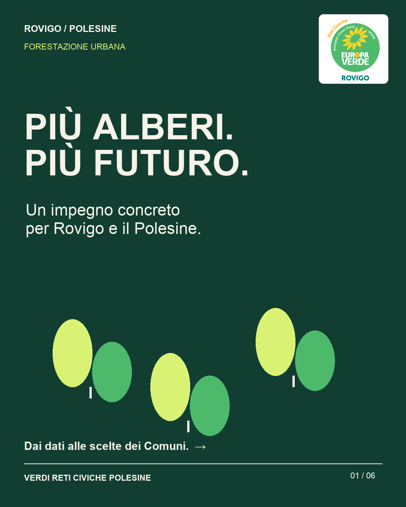
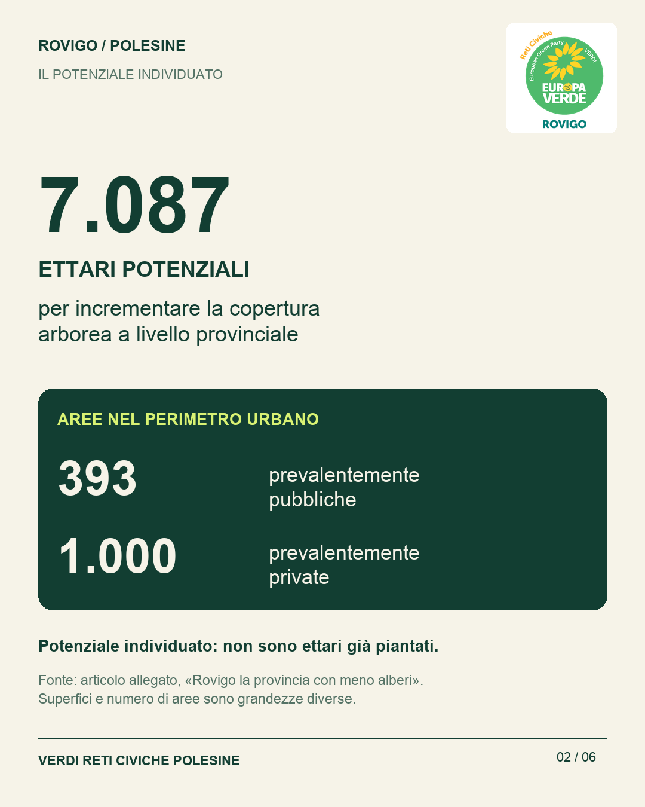
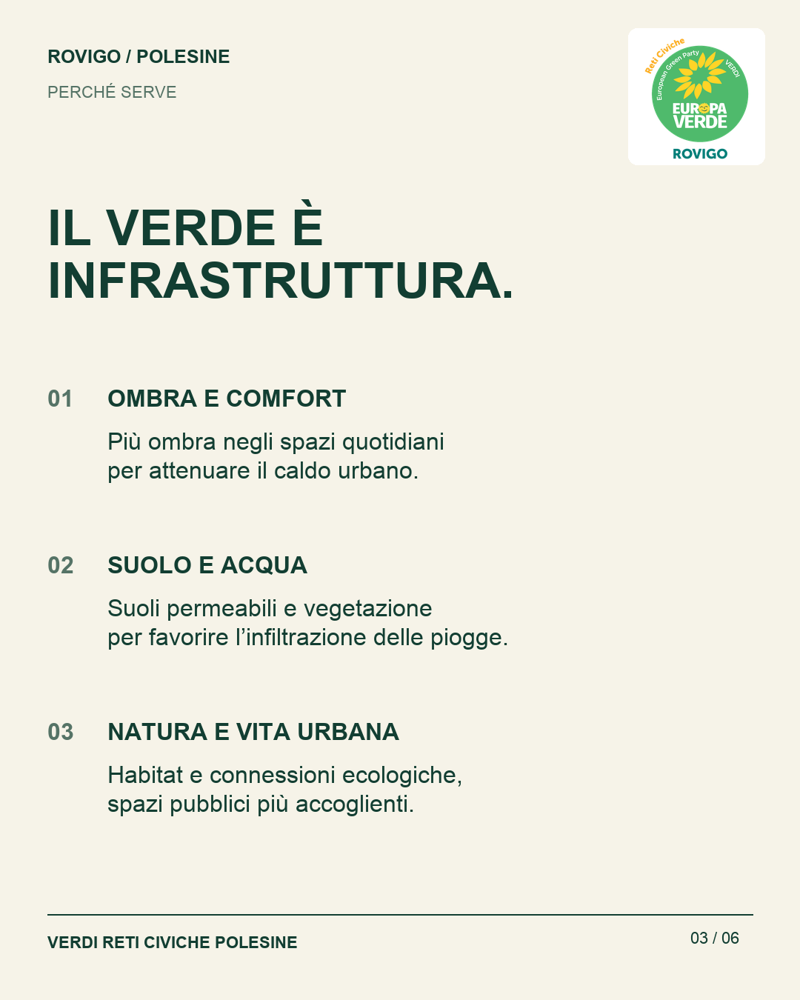
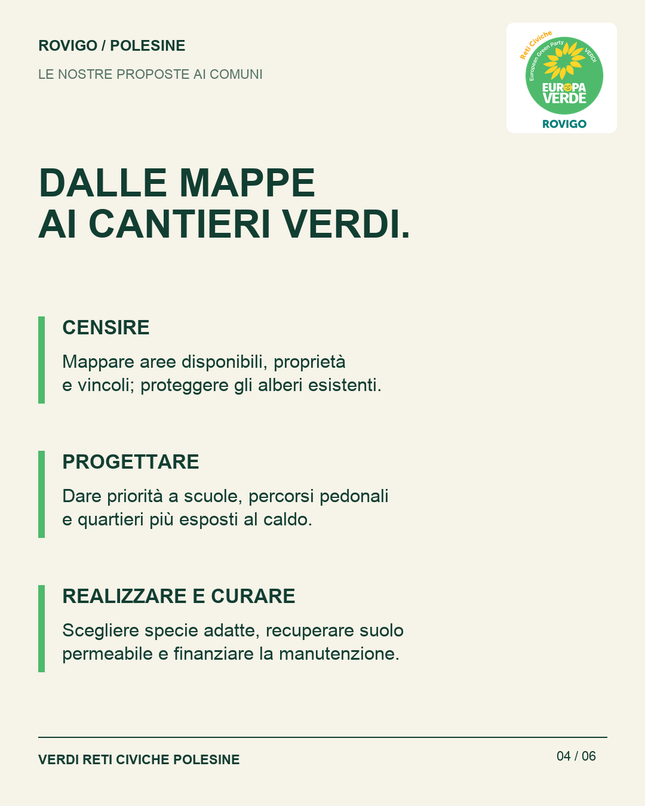
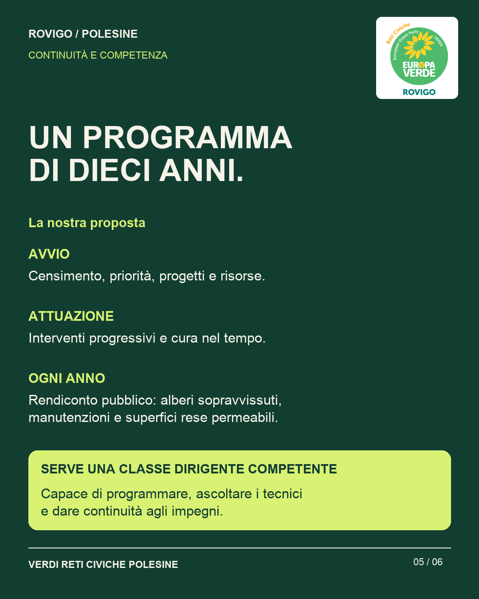
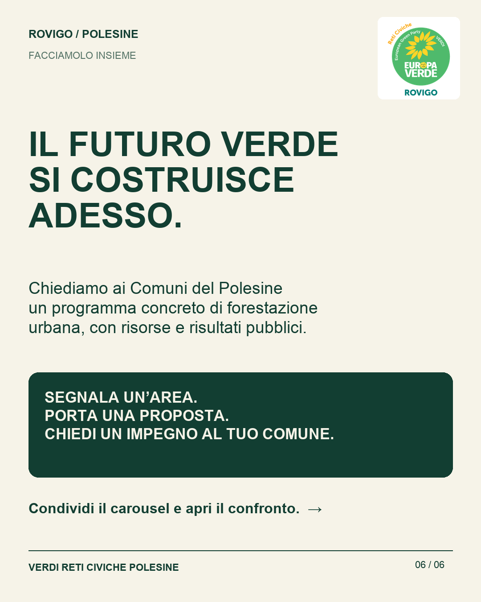

28 OTTOBRE 2026 · AMBIENTE E TERRITORIO
Più alberi.
Più futuro.
Forestazione urbana a Rovigo e in Polesine: dai dati alle scelte dei Comuni.
Un programma concreto per il territorio
Verdi Reti Civiche Polesine sostiene la necessità di rigenerare le città, ampliare il verde urbano, recuperare suoli permeabili e limitare il consumo di suolo, nella direzione richiamata da ISPRA nell’articolo condiviso.
L’articolo «Rovigo la provincia con meno alberi» riporta 7.087 ettari potenziali per incrementare la copertura arborea provinciale e, nel perimetro urbano, 393 aree prevalentemente pubbliche e 1.000 prevalentemente private. Sono superfici potenziali e numero di aree: non ettari già piantati né interventi già finanziati.
La nostra proposta ai Comuni è un programma decennale: censire le aree e proteggere gli alberi esistenti, individuare le priorità, finanziare interventi e manutenzione, rendere pubblici ogni anno i risultati. Serve una classe dirigente competente, capace di ascoltare i tecnici e dare continuità agli impegni.
Fonte dei dati: articolo «Rovigo la provincia con meno alberi», fornito in ritaglio stampa. Testata e data non sono visibili nel ritaglio disponibile. Le proposte amministrative qui presentate sono di Verdi Reti Civiche Polesine.
Il carousel in sei slide











